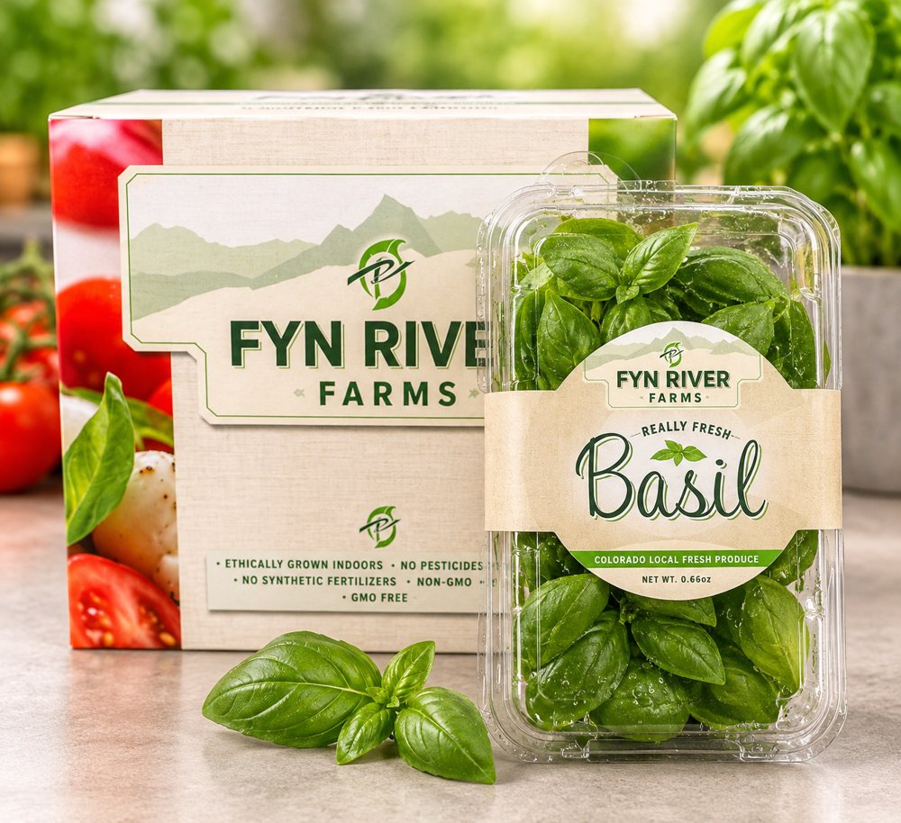
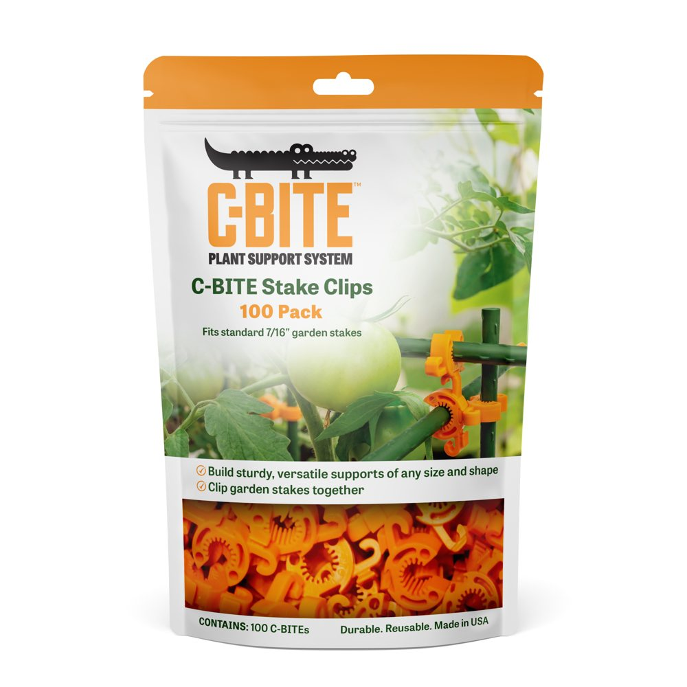

I help small brands get onto big-box shelves, and make money once they’re there.
I invented and designed a garden product, patented it, made it on my own injection-molding machines, and took it into about 1,000 Walmart stores, mostly by myself, selling through Lowe’s, Tractor Supply, QVC and Amazon along the way. I did the pricing, the packaging, the item setup, the barcodes, the routing and the shipping paperwork, and I learned most of it by doing it and paying for the mistakes.
I still run my own product business. Now I also help independent brands do the same, without learning it the hard way. Each job has a fixed scope and a flat fee. There’s no retainer, and you work directly with me.
What happens after the buyer says yes
Getting the yes feels like the finish line. Then the onboarding packet arrives. It covers the supplier agreement and its allowances, item setup, barcodes for each unit and case, packaging and labeling specs, a routing guide with fines for missed pickups, shipping documents and EDI, and a first order with a ship date you can’t miss.
None of it is hard once you’ve done it. All of it is confusing the first time, and small mistakes come back later as deductions, delayed payments or a shipment turned away at the dock. That’s the part I help with, and I explain it as we go, so you can handle the next order without me.
Services and prices
Start wherever you are. Many brands that come to me before a yes come back for help after one.
Before a buyer says yes
Know your numbers before you quote a buyer.
Your price worked from the shelf down to the cash you actually keep, after the retailer’s margin, allowances, freight and deductions. Also a price ladder so your channels don’t undercut each other, and the lowest cost price you can quote a buyer.
Be ready when the opportunity comes.
Price Check, plus your RangeMe profile set up properly, a review of your sell sheet, the pitch events that suit your product, and one practice pitch with me playing the buyer.
Make the most of one specific pitch.
Pitch Ready, plus your application for one specific pitch event written together, two rehearsals, and a plan for following up afterward.
Walmart has asked me to bring them other products. A few times a year I take one I’m willing to put my name behind. This is paid as a percentage of sales, agreed in writing beforehand, not as an up-front fee.
Packaging
Before your artwork goes to a buyer or a printer.
A careful look at the details before a buyer or a printer sees them: what reads from shelf distance, barcodes and required text against the retailer’s specs, consistency across packaging, sell sheet and listing, and a list of fixes in order of importance. Credited toward a packaging project within 30 days.
From brief to cartons on the dock.
I manage the job from brief to delivered cartons, for up to three products: the design brief, finding and managing the designer, dielines and labels checked before print, then printer quotes, proofs and the press check. You pay the designer and printer directly at their own rates. I don’t mark them up.
Two packaging jobs of my own:


After a buyer says yes
Got the onboarding packet and not sure what you’re looking at?
A 90-minute walk through your onboarding packet, followed by a written list of gaps, with whatever blocks your first order at the top. Credited in full toward Readiness within 30 days.
Get set up to fill your first order.
Item setup, barcodes and case labels, a packaging spec check, a routing compliance plan, shipping document templates, help choosing an EDI provider, and your supplier agreement explained in plain English. Usually two to three weeks.
Get the first order shipped, received and paid correctly.
Readiness, plus my help through your first order: the load request, pickup, bill of lading, on-time delivery, and a look at your first payment for deductions you shouldn’t have taken.
Fixed-price jobs are paid half up front and half at handoff. The two smaller reviews and Price Check are paid up front.
Not sure which fits? That’s what the free call is for.
Pitch events most small brands don’t know about
Cold emails to buyers rarely get answered. The large chains have formal ways to find new products, from pitch events to open submission portals, and many of them run through a site called RangeMe. A few worth knowing:
- Walmart Open Call
- For products made, grown or assembled in the U.S. Applications open in summer, and the pitch day is in Bentonville in October.
- Walmart Road to Open Call
- Regional pitch days around the country in spring and early summer.
- Lowe’s Into the Blue
- Lowe’s pitch event for suppliers new to Lowe’s. Recent years have taken applications in late summer, with a pitch day in the fall.
- Tractor Supply
- Takes product submissions any time through RangeMe, routed to the right category buyer. It has also held online Open Buying Days in past years.
- RangeMe
- The product listing that retail buyers browse, and the way into most of the programs above.
These programs change from year to year, and not every product suits every one. Part of my job is knowing which door fits yours.
How we’d work together
We start with a free 20-minute call so I can hear where you are and tell you honestly whether I can help. If it’s a fit, you send me whatever paperwork you have, and within two days I send back a list of what needs doing, most urgent first. We work through it over two or three calls and a shared checklist. At the end you keep the templates, a ship-day checklist and a recorded walkthrough, so you can do it yourself next time.
About me
I’m Jason Rider. I founded C-BITE, a patented modular plant support system, and built it into about 1,000 Walmart stores plus Lowe’s, Tractor Supply, QVC and Amazon. For most of that run, I was the operations department, and some days the person unloading the truck.
I’ve priced one product across five channels without them undercutting each other, managed packaging from brief to press, negotiated a supplier agreement and lived with its terms, and read every payment and deduction that came after.
Before that I served in the Peace Corps in Chile and earned an MBA at Leeds. I’ve been self-employed since 2013 and live in Fort Collins, Colorado.
Questions people ask
- Who do you work with?
- Founders with a physical product and a small team, often one to five people without a retail operations background. Home and garden, pet, outdoor and general merchandise suit me best.
- Who isn’t a good fit?
- Food brands that need FDA or food-safety work, and sellers who only list on Walmart’s online marketplace.
- Do I need a buyer already?
- No. Some clients are getting ready for their first pitch. Others have a buyer waiting on them to finish onboarding. The services cover both.
- Will you do the work for me?
- I do it alongside you. Depending on the job, that means reviewing documents, managing a packaging project, writing applications with you or coordinating your first shipment. I also explain each step, so you can run it yourself next time.
- Can you guarantee a buyer will say yes?
- No, and I’d be wary of anyone who does. I can make sure your price works, your pitch is ready and you’re applying through the right door.
- How do Walmart introductions work?
- If I think your product fits, we agree in writing on a percentage of your net Walmart sales for a set period before I bring it to anyone. I only take on a few a year.
Get in touch
Book a free 20-minute call, or email me if you’d rather start in writing.
Email: jason@rdrworks.com